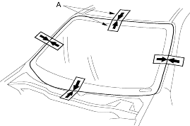
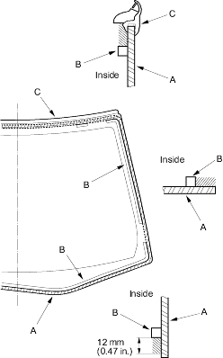

- Set the windshield in the opening and centre it.
Make alignment marks (A) across the windshield and body with a grease pencil at the four points shown. Be careful not to touch the windshield where adhesive will be applied.

- Remove the windshield.
- With a sponge, apply a light coat of glass primer around the edge of the windshield (A) between the dams (B) and moulding (C) as shown, then lightly wipe it off with gauze or cheesecloth:
- Apply glass primer to the moulding.
- Do not apply body primer to the windshield and do not get body and glass primer sponges mixed up.
- Never touch the primed surfaces with your hands. If you do, the adhesive may not bond to the windshield properly, causing a leak after the windshield is installed.
- Keep water, dust and abrasive materials away from the primed surface.
Cross-hatched area: Apply primer here
